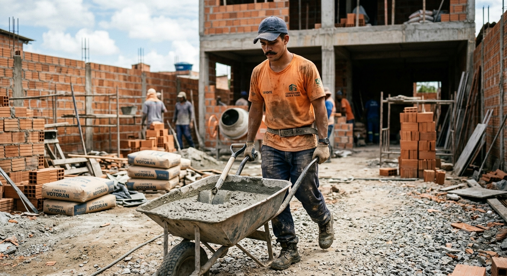

Tião do Gas nasceu em Itaqueri do Vale, um pequeno distrito do interior de Minas Gerais conhecido pelas festas tradicionais e pelas estradas de terra que cortam a região. Filho de um pedreiro e de uma cozinheira de escola pública, cresceu em um ambiente simples e de muitas dificuldades financeiras.

Ainda adolescente, começou a trabalhar como servente de pedreiro aos 15 anos, ajudando a sustentar a família. Desde cedo, aprendeu a importância do esforço e do trabalho pesado, acompanhando o pai em pequenas obras e serviços da comunidade.